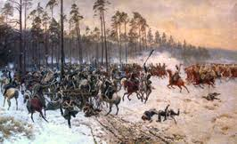
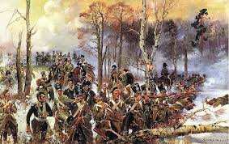
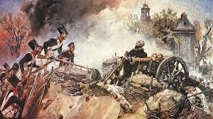
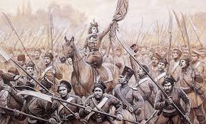

Polskie powstania narodowe
Polskie powstania narodowe

 Aby powstanie zostało zakończone sukcesem, należało powołać władze, które kierowałyby walką. Niestety. Wśród posłów do sejmu, członków rządu, wyższych rangą oficerów niewielu było takich, którzy wierzyli w ostateczny sukces powstania. Ci, którzy mieli decydować o jego dalszych losach, chcieli całą sprawę jak najszybciej zakończyć. Niektórzy szukali porozumienia z carem. Ten jednak był nieugięty, bo chciał z zaistniałych okoliczności wyciągnąć jak największe korzyści dla Rosji. Pojawiał się bowiem w razie klęski powstania pretekst do ograniczenia politycznej odrębności Królestwa i wprowadzenia tam rządów rosyjskiej „silnej ręki”.
 Do Warszawy ciągnęli ochotnicy z innych zaborów, formowały się nowe pułki, ludność sypała szańce, zbierano datki na cele wojenne. Królestwo przygotowywało się do odparcia stutysięcznej armii rosyjskiej pod dowództwem gen. Iwana Dybicza, wysłanej na rozkaz cara dla stłumienia powstania. W lutym 1831 r. Polacy odparli pierwszy atak Rosjan na Warszawę, jednak dowództwo nie zdecydowało się na rozbicie osłabionych sił wroga. Po parotygodniowej przerwie w walce Polacy w dniu 31 marca podjęli działalność ofensywną. Powstańcze działania rozprzestrzeniły się poza granice Królestwa, obejmując swoim zasięgiem będące pod rosyjskim panowaniem ziemie litewskie. Stopniowo jednak przewaga rosyjska rosła, a wreszcie Warszawa musiała skapitulować.
 Po upadku powstania nastąpiło nasilenie prześladowań Polaków przez władze rosyjskie. Do nich zalicza się m.in. wcielenie żołnierzy polskich do armii rosyjskiej i zesłania w głąb Rosji, umieszczenie ich dzieci w rosyjskich tzw. koloniach wojennych, skazanie na więzienie i ciężkie roboty kilkuset uczestników powstania, zabranie Polakom majątków ziemskich i przekazanie ich w ręce Rosjan. Wielu Polaków wyjechało z kraju (tzw. Wielka Emigracja).